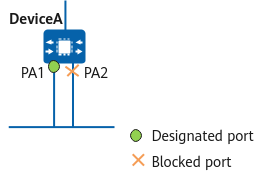

Election Rules for the Root Bridge, Root Port, and Designated Ports
The root bridge, root port, and designated port are selected based on the BPDU priority vector {root BID, root path cost, sender BID, port ID}. Devices determine these by exchanging and comparing the values of the fields in the BPDU priority vector.
- A BID consists of a bridge priority, indicated by the leftmost 16 bits, and a bridge MAC address, indicated by the rightmost 48 bits.
- The root path cost (RPC) is the sum of the path costs of all ports between the port and the root bridge, and the path cost is a port variable used for link selection. STP, RSTP, and MSTP calculate path costs to select effective links, block redundant links, and trim the network into a loop-free tree topology.
- A PID is composed of a port priority (leftmost 4 bits) and a port number (rightmost 12 bits).
Root Bridge Election
The device with the smallest BID is elected as the root bridge.
Root Port Election
- Smallest RPC: On a non-root bridge, the port with the smallest RPC is elected as the root port.
- Smallest sender BID: If two or more ports on a non-root bridge have the same RPC, then that with the smallest sender BID in the received BPDU is elected as the root port.
On the root bridge, there is no root port and the path cost of each port is 0.
Designated Port Election
When multiple ports have the same RPC, the port with the smallest PID is elected as the designated port and others are blocked.
Figure 1 shows an example of PIDs. Port PA 1 of DeviceA has a smaller PID than port PA 2. The BPDUs received on the two ports have the same RPC and sender BID, so PIDs of the two ports are compared. In this example, PA 2 with a larger PID is blocked.
Figure 1 Situation where PIDs need to be compared